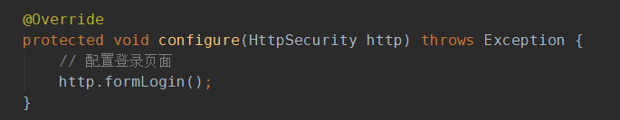

前面演示了一个简单的登录入门例子，使用springboot-security默认的配置实现，虽然非常简单，但是基本实现了登录功能。不过在生产环境下，显然不能仅仅使用如此简单的登录功能，我们还需要更多个性化的登录配置，所以我们要使用配置类来代替默认配置。新建一个配置类 WebSecurityConfig，继承 WebSecurityConfigurerAdapter ：
现在的配置类没有配置任何内容，重启项目，访问登录页面发现找不到默认登录页面了：
访问主页，发现可以直接访问，不会默认跳转到登录页面了：
配置默认登录页面的配置很简单：

重启再次访问，就可以看到登录页面了：
用户在没有登录的情况下，访问任何未授权的页面，都会自动跳转到登录页面，这是登录的基本功能。在security中加入如下的授权配置：
其中，调用authorizeRequests()的意思是指通过authorizeRequests()方法来开始请求权限配置，anyRequest().fullyAuthenticated()是对http所有的请求必须通过授权认证才可以访问。除了fullyAuthenticated方法，还可以使用authenticated方法，这两个有什么区别呢？来看一下官方文档的描述：
也就是说，fullyAuthenticated不仅可以让有权限的用户访问，还可以让remember-me的用户访问。所以，如果登录页面有记住我，一定要使用fullyAuthenticated。
现在重启访问，可以发现恢复了原来入门例子中的效果。后面的例子中，我们会加入更多的个性化配置。